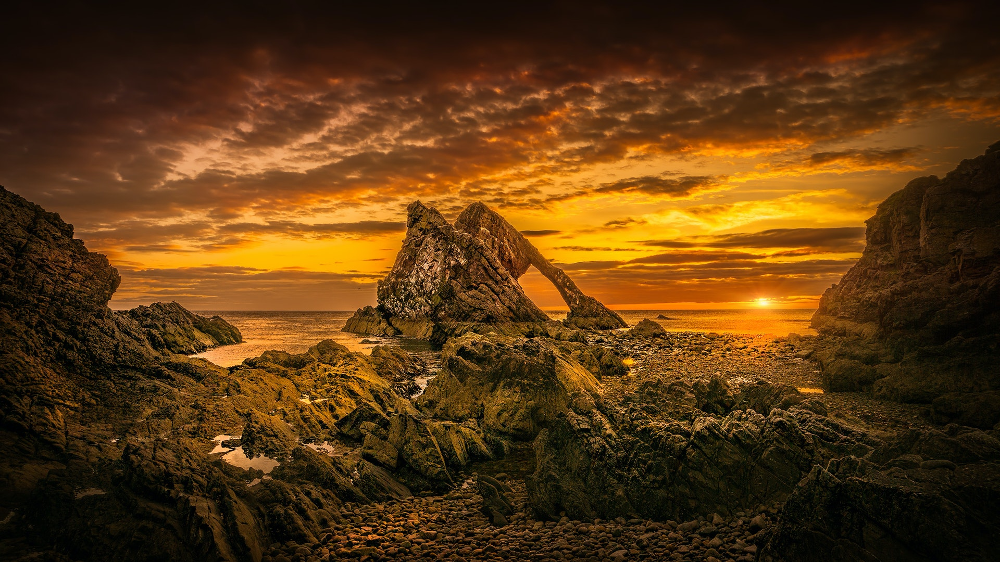

This site has been created to showcase the many stunning locations around Scotland that are a must for landscape photographers of all abilities
Visit ancient castles, windswept beaches, bustling cities, majestic mountains and shimmering lochs for your utimate photography experience
Population: 5,463,000
Capital City: Edinburgh
Other cities: Glasgow, Aberdeen, Dundee, Inverness, Perth, Stirling
Land Area: 77,933 sq km / 30,090 sq miles
Highest Point: Ben Nevis 1,345 metres / 4,413 feet
Number of Islands: 900+
Number of Lochs: 30,000+
Map here